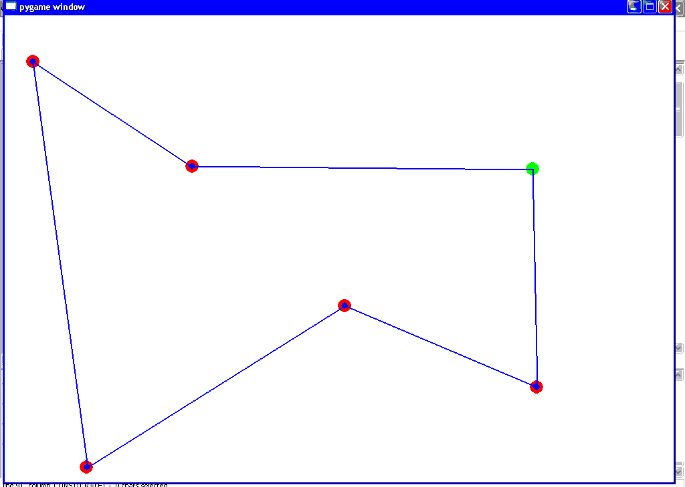
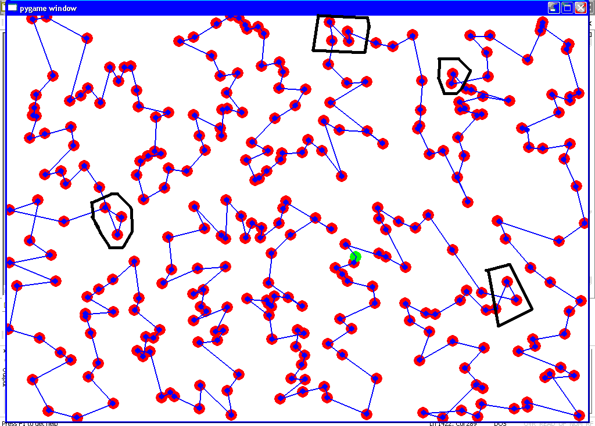
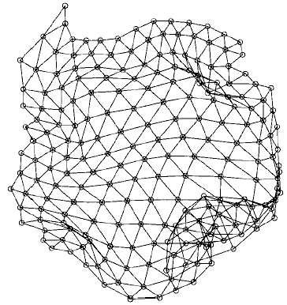
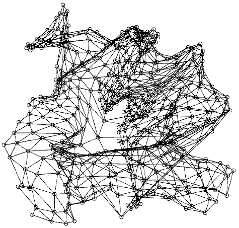

Circuit hamiltonien et Kohonen#
Aperçu#
Le problème du voyageur de commerce est un problème classique, aussi connu sous le nom de travevelling salesman problem. Le voyageur de commerce doit effectuer la tournée de ses magasins le plus rapidement possible. Il doit donc déterminer un chemin passant par toutes les villes qui soit le plus court possible.
Cette problématique se retrouve également dans d’autres domaines comme la plannification de tâches. Par exemple, une machine doit effectuer un certain nombre de travaux, l’ordre dans lequel elle les traite importe peu, on demande simplement que le temps de traitement de l’ensemble des tâches soit le plus court possible. Cependant, avant toute tâche, cette machine doit être préparée et le temps de préparation dépend des tâche précédente et suivante. Ce problème ressemble à celui du voyageur de commerce, les temps de préparation entre deux tâches jouent le rôle de distance.
Il existe plusieurs algorithmes pour déterminer ce plus court chemin. Deux seront présentés. Le premier est celui des cartes de Kohonen, il s’applique de préférence à un nombre de villes inférieur à un ou deux centaines. Au delà, lorsque les villes sont trop proches des unes des autres, cet algorithme retourne une solution où les erreurs apparaissent de manière évidente. La seconde méthode est plutôt utilisée pour la recherche du plus court chemin pour des graphes contenant un grand nombre de villes. Pour ces grands graphes, les cartes de Kohonen convergent lentement. Le plus court chemin est en fait une permutation de l’ensemble des villes, les deux méthodes proposées sont deux manières différentes d’explorer l’ensemble des permutations possibles.
Plus court chemin passant par les 300 villes, solution retournée par l’algorithme de Kohonen. Certaines erreurs cerclées de noir sont évidentes comme deux segments du chemin qui se croisent. Celles-ci sont néanmoins facile à corriger une fois que la solution a convergé.
Obtenir le plus court chemin passant par tous les sommets d’un graphe est un problème d’optimisation avec contrainte. C’est un problème dit NP-complet Le site The Traveling Salesman Problem est dédié à ce problème. Il référence des articles, quelques solutions à des problèmes géographiques comme le plus court chemin reliant toutes les villes de Suède. Il référence également une librairie écrite en~C proposant divers algorithmes permettant de résoudre le problème du voyageur de commerce.
Un problème est dit NP-complet s’il n’existe aucun algorithme de coût polynômial permettant d’obtenir une solution optimale.
Le problème du voyageur de commerce appartient à une classe de problème plus vaste appelée optimisation combinatoire. Pour ce type de problème, l’ensemble des solutions possibles est discret et non continu (voir A backbone based TSP heuristic for large instances).
Cartes de Kohonen#
Les cartes de Kohonen sont utilisées pour réaliser la projection d’un nuage de points sur un espace de dimension moindre. Dans le cas du problème du voyageur de commerce, il s’agit de projeter un nuage de points inclus dans un espace à deux dimensions vers un espace à une dimension. Chaque ville recevra une coordonnée~: son ordre dans le chemin le plus court. Les cartes de Kohonen sont plus fréquemment utilisées pour projeter un nuage de points inclus dans un espace à dimensions vers un espace à deux dimensions, soit un espace qui puissent être représenté graphiquement. Ceci explique leur désignation de cartes de Kohonen ou en anglais Self Organized Map (SOM). Le document citeindex{Koivisto1999} (voir aussi citeindex{Vesanto2000}) regroupe plusieurs articles à propos de diverses techniques et diverses utilisations des cartes de Kohonen dans des problèmes tels que la reconnaissance de la parole, les modèles de Markov cachés, la recherche de mot-clé dans un texte, l’analyse en composantes principales (ACP).
Exemple de cartes de Kohonen après convergence. Il s’agit de projeter dans un plan un nuage de points en trois dimensions. Chaque neurone possède six voisins. Plane au départ, la carte se déforme pour s’adapter au nuage de points qu’elle doit modéliser. La seconde carte est plus déformée que la première et présente quelques torsions qui ressemblent à un papillon. Ces figures sont tirées de l’article Clustering of the Self-Organizing Map.
On suppose qu’un chemin est constitué de points ou neurones, différents ou non des villes, chacun étant reliés à ses deux voisins. L’idée principale de l’algorithme consiste à faire en sorte que chaque villes tire vers elle un neurone et ses voisins. Au cours des itérations successives, la longueur du chemin s’agrandit et il se rapproche peu à peu des villes jusqu’à que chaque ville soit rejointe par un neurone.
On note n villes par avec . Un chemin de longueur l est noté , on suppose que les voisins du neurone
sont les neurones d’indices et . La fonction désigne une distance.
initialisation
Le chemin est constitué de trois neurones placés autour du barycentre de l’ensemble , t compte le nombre d’itérations.
étape 1
On définit le vecteur et
Pour i allant de 1 à n
On détermine l’indice du neurone le plus proche de la ville i.
On met à jour chacun des voisins q de de la façon suivante : .
étape 2
Pour chaque neurone d’indice i du chemin, si alors il est supprimé. Ceci signifie qu’aucune ville ne l’a choisi. Dans le cas contraire, si , plus d’une ville l’a choisi, le neurone est dupliqué. C’est-à-dire qu’un autre neurone est inséré dans le chemin et placé à proximité du neurone dupliqué.
Tant que les neurones bougent encore, on retourne à l’étape 1.

{kind=link}
{kind=link}
{kind=link}
{kind=link}
Afin que l’algorithme converge, on choisit des fonctions et décroissantes par rapport à t. Il est conseillé de choisir des fonctions qui vérifient :
On peut choisir par exemple :
Il est souvent utile d’effectuer plusieurs essais pour déterminer les valeurs , , . Ces fonctions peuvent également dépendre d’autres paramètres tels que l’angle formé par un neurone et ses deux voisins. Il est aussi possible qu’une ville attire un neurone, ses deux neurones les plus proches puis encore d’autres voisins plus éloignés. Il n’existe pas de fonction optimale, elles dépendent du problème à résoudre.
Pour améliorer la convergence de l’algorithme, plutôt que de considérer à l’étape 2 les villes toujours dans le même ordre, elles sont toutes passées en revue dans un ordre aléatoire et différent à chaque itération. Cette modification permet de relancer plusieurs fois l’algorithme pour choisir au final le chemin de plus courte longueur.
La suppression et l’insertion de neurones est facile à concevoir lorsque la carte de Kohonen n’est qu’un chemin à une dimension. Lorsqu’il s’agit d’un maillage à deux dimensions, cette étape n’est pas incluse. L’initialisation consiste alors à placer un nombre de neurones fixe puis à appliquer l’étape 2. Le voisinage est simplement plus étendu.
Le coût de cet algorithme dépend de la vitesse de convergence. Toutefois, l’étape 2 a un coût de où n est le nombre de villes, coût à multiplier par le nombre d’itérations. Les paragraphes qui suivent proposent un autre algorithme permettant de construire une solution pour le problème du voyageur de commerce. Il est beaucoup plus rapide mais il explore davantage l’ensemble des solutions.
Code : teachpyx.practice.tsp_kohonen.
En vidéo :